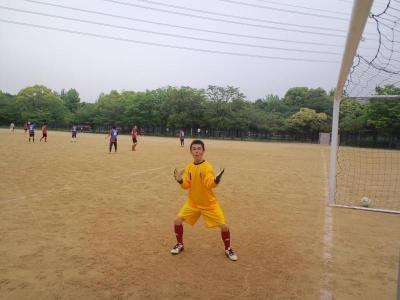

昨日参加された皆さんお疲れ様でした。まっさんチーム運営いつもありがとうございます。昨日の試合ですが皆さんのコメントにもあるように試合毎に攻守の形が少しずつ出来つつあり楽しいサッカーが出来るようになったと感じてます。またFKの詳細ですが正確にはクロスバーにあたりキーパーに当たって入った感じですのでまっさんのイーグルショットに比べたら全然ですしあれはベストシュートだと思います。
昨日は本当に楽しい試合でした。
皆さんお疲れ様でした。
皆さん、昨日はお疲れ様でした。
楽しいひと時を有難うございました～！
大勢の方にコゴリンのお相手もして頂き、感謝しております。
ワダッチの誤解も少しですが解けたようで良かったです^^
試合の方もAチーム・Bチーム共に白熱した試合の上で勝利出来たことでチーム力も向上している気がします。
皆さん、これからも宜しくお願いします！
最後にまっさん・テラさんのゴール、素晴らしかったですー！
昨日はみなさんお疲れ様でした。
今日はメンバーが2チームに分かれ固定されていたこともあり試合を重ねるごとに両チームとも綺麗な良いサッカーが出来ていた印象を受けました。
今日は本当に楽しかったです。
深北の悪いイメージが吹っ飛びました。笑
みなさんに作ってもらったチャンスを活かせなかったのが本当に申し訳なく思います。
昨日はまっさんの豪快なシュートとテラさんのファンタスティックなフリーキックが生まれたので良かったなって思います。
みなさんお疲れ様でした。
皆さんお疲れさまでした。
マッサン、テラさん、素晴らしいゴールでした。
みんなが言っている通り、歓声あり、笑い声ありで、とても楽しい空気の中で試合が出来るのがいいですね。
個人、個人、見せ場があり、見ていてとても楽しかったです。ただ個別に書くと、マッサンより長くなるので、やめときます(^-^;
地味なところで献身的に走られていた皆さんすごいです。
それにひきかえ、あんなにパスをもらいながら、一点もあげれていない「今日のよっしー」は、クズですね、弁解の余地がありません。
Bチームの皆さん、すいませんm(__)mでした。
ありがとうございました。でも、またみんな、パスください。
大変、お疲れさまでした。
にしても、足腰痛いなぁ(-_-;)
本日参加された皆さんお疲れ様でした！
今日は旨いビールを飲んでおります。笑 僕はＡチームだったのでＢチームの試合感想を書きますが、ライマンしながら印象的だったのは、４試合目のヨッシャンの左からゴール前へのセンタリングや、テラさんのバックラインへの戻り、あれは半端ない運動量でした。
あとはマットンの相手二人置き去りターンしてスルーパス、上手いと思わず声を上げました。
Ａの試合ではキーパーすがちゃんの神の声が光ってましたね。臆せずどんどん声を出せる雰囲気がうちのチームにはあるので、それが大きいですね。トップ下に初めて入った前ちゃんが試合後に「オレ、スルーパス出せるんや！」って言ってたんが笑けました。自分だけ知らなかったみたいです。笑
マッサンとテラさんのビューティーゴール、鳥肌ものでしたね。マッサンの足の状態が気掛かりですが… ホント今日は楽しい試合でした。皆さんありがとうございました～

今は足の痛みと眠気と戦いながら報告打ってます。朝方まで知人と歌いに行ってたんで３時間くらいしか寝てない上に、動きまくってあげくの果てに負傷して、もう明日に活動報告書こうって思ってたら、もりちゃんとつよぽんが書いてくれてて、僕への無言の催促（笑）、頑張って作成します。それにしてもちょっと僕へヨイショっぽくない（笑）
今日は土曜日にもかかわらず２０名の参加がありびっくりでした。参加された皆さん、お疲れ様でした。本日も以前の服部緑地に引き続き当チームをご招待して頂き、対戦して頂いたSPARKさん、おかげで本日も大変楽しい時間を過ごすことができ、本当にありがとうございました。また、ミュンツェさんも対戦して頂いてありがとうございました。
さて一試合ごとにダイジェスト方式で簡単に活動報告書いていきますね。さすがに６試合全てを覚えていませんので、追加とかあれば参加された皆さんよろしくお願いします。またコメントをお願いする方は今日は強制ですよ～（笑）
ただ、その前に試合のグランド準備でラインカー引いてたら拍手喝采、なんでやねん（笑）。まあ、ラインを引いてもう１０年以上、ベテランですからね（笑）
今日はうちの参加者が２０名でしたので、２チームに分けました。メンバー分けは試合結果を参照してください。（ちなみに分けた基準は入部順です（笑））
最初の１試合目はegaliteＡとＳＰＡＲＫさんとでした。お互いに攻防がいい感じで僕はスイーパーしてましたが、結構左右に動いてフォローが大変でしたね。右サイドバックのもりちゃんが結構頑張ってオーバーラップをしてくれてましたが、その影響で次の試合からはもりちゃんタイマーがピコンピコンと最初から鳴り続けてましたね（笑）
うちも結構攻めたりして、ゆうちゃんが相手のゴール前で華麗に股抜きをしたのをわだっちがかっさらっていったり、オフサイドとかにもなったりしましたが、ハマさんからのクロスがいい感じで入ったり、ごりんさんのゴール前での惜しいシュートもありました。今日も息子さんが来てましたが、お父さんは頑張ったかな？僕は誰かと違ってごりんさんのギャグに乗っかってくれるいい人だったみたいで良かったです（笑）
わらけたのは左サイドバックでボールキープしてたまえちゃんにごろうさんが毒を吐いたことかな（笑）、そのおかげであおりを僕がくらったんですよ～（怒）
２試合目はegaliteＢとミュンツェさんでしたが、その前に試合前にごりんさんの息子さんを入れて軽くミニゲしてたけど、まえちゃんがごりんさんの息子に見事に取られてたのがおもろかったです。
さて、ゲームはこちらもいい感じでした。Aチームはサイド主体でしたがBチームは縦パスが多かったイメージがありましたね。トップしてたよっしーに絶妙な縦パスが出て、よっしーが追いついて打とうとしたらつま先にボールが当たってキーパーへナイスパス、あれはちなみにループを狙ったみたいですが、まだまだ修行がたりませんな（笑）、そう簡単に僕のループシュートは超えられまへんでえ、まあまぐれだけどね（涙）
あとはわっちが豪快に空振りしてたのが印象的だったかな、でも僕も１試合目に同じことしてるけどね。
終了間際に、テラさんからスガちゃんへ素晴らしいスルーパス、追いついてシュートするも決まりませんでした。あれも実は僕に感化されてループを狙ったらしいですが１０００億年早いわ（笑）
３試合目は一番のＡチームとＳＰＡＲＫさんと再度でしたが、サプライズはまえちゃんがトップを初希望したことでしたね。きっと心の中では「かきさんのポジション奪ったる」って気持ちが少しはあったのかな？？（笑）、僕と２トップって感じになりましたが、初めてなんでどういった連携とかなるのかなって楽しみながらしましたが、結果的にはトップ下のポジションになって、ボールを溜めてスルーパスとか出してくれる感じで良かったですね。次の試合もトップ下だったんで、味しめたみたいでしたね。
左サイドからハーフのユウちゃんが何度もアタックしかけてくれて、つぶされたりしたけどそのうちの１回がつぶされながらもつま先でゴール前にボールをゴロで出してくれて、右側から走りこんでいた僕が、変な回転が掛かってたんですがノートラップで左足を振りぬいたら、またもやまぐれで、強烈に低空のイーグルショットが左隅に突き刺さりました。先週の練習で同じようなシュチュエーションをしてましたが、僕も他の人も全然だったんですが練習の成果が出て良かったです。
僕は得点取らしてもらったんで、何とかセンターフォワードのまえちゃんに１点をと接待パスを送り続けてましたが、通らなかったり、通っても溜めて、また反対にはたいてとまえちゃんらしいプレーでしたね。僕的にはダイビングヘッドとかを期待したんですが（笑）。今日は出来ればまえちゃんに心境のコメントが欲しいなあ。（笑）
４試合目はＢチームとミュンツェさんと再度でした。試合開始当初から縦パスにたっちゃんが走りこんで惜しい場面を何度も作ってました。相手チームに若い人が居ましたが、うちではたっちゃんしかついていけないのでよく頑張ってくれたと思います。
深北緑地はずっこけの因縁の場所、今日の感じで吹っ切れたかな？コメお待ちしてます。
僕は打ち合わせで見てなかったんですが、ファールでフリーキックになったらしいのは知ってたんですが、その後、気づいたら大歓声が・・・テラさんが２５Ｍくらいかな？直接フリーキックをぶち込みました。おかげで僕のゴールは影を潜めてさ・・・（涙）、つよぽんもトイレに行っていて見れなかったので、テラさんぜひ詳細のコメントをお待ちしてます。ただＳちゃん情報によれば最後にキーパーに当たって入ったとか・・・、僕は心が狭いなあ（涙）。いやー見たかった。
それ以外にもまっとんがいい感じの縦パス出したりしてたけど、よっしーが全体的におもろかったイメージがありますね。豪快にボレーを明後日の方向にぱぴゅーんと。
あと、相手チームの若くて上手な１１番にゴール前にかなり切り込まれたのを最後の砦で、１対１で抜かせなくてしのいでくれたすがちゃんのデフェンスはお見事でした。もとサイドバックはさすがっすね。ぜひバックのコツのコメントを皆さん宛によろしくです。
ここからは時間が余ったのでエキシビジョンマッチを主催者さんが提案してくれました。
５本目はＢチームとＳＰＡＲＫさんでした。
１試合目と同じく、攻防があっていい試合でしたね。タカさんの右クロスからよっしーの走りこんでのヘディングは惜しかったですが、全体的に今日はよっしーはちょっとまってちょっとまってよっしーさんでしたね。ニュースパイクデビューしたり、試合終わってから駐車場内や入り口付近を徘徊し挙動不審で車の場所わからんと迷子になったんちゃうかとか思ってたら、迎えが来るからって・・・迎えは誰だったんでしょうね～、今日はよっしーにはぜひ、「今日のよっしー」で感想文をよろしくお願いします（笑）
反対に攻められている時もありましたが、Ｂチームキャプテンをお願いしたシゲさんが奮闘してましたね。それでも相手に裏を取られて、キーパーしてたゆうちゃんと１対１になる場面がありましたがしのぎました。ただ、外野からユウちゃんへの応援どころか、ゆうちゃんへのいじり声が（笑）、あの時は超人気者でしたね。
ゴール前でスガちゃんがフリーキックがありました、結果的に間接フリーキックだったみたいで、ちょっとうまくいかなくて残念でしたが、遠くからは間接かどうかはわかんなくてすがちゃんが蹴る前に、前ちゃんが僕に「これ決まったら、まっさんのゴールほんま印象無くなるわ」っていう毒を吐かれました、これはごろうさんのせいだな。（笑）、もしくはＫさんに毒されているから？？（笑）
んで最後の試合はＡチームとミュンツェさんでした。負傷するまでにもりちゃんに鬼パスを２回ほどだして、傷だらけのローラ状態にしてしまったのはごめんちゃい（笑）、ヘディングの分はあれは単に角度ミスです。
僕が右サイドを突破して、クロスを上げようとしたら足がついて行かず、ゴールの方向へ「失敗した～、あ、でも入ったわ」って打った瞬間に独り言いました（笑）。まあ、ゴールはゴールなんだけどテラさんのフリーキックに印象薄くされて、さらに自分で墓穴を掘った感が凄くありました（笑）
あとはもりちゃんからかな？の左サイドからのクロスにごろうさんが飛び込んでダイビングヘッド、少し当たったけど残念で、ごろうさんの絶叫、その後、右サイドでボールを２回ほどキープして囲まれて取られて絶叫、最後はこけて絶叫、１人でコントをしてましたけど、あれは何がしたかったのか？法廷で明らかにしてもらいたいものです（笑）、しかもごろうさんがこけたせいで（にしときましょう）僕の代わりに入ったテラさんもこけるし（笑）
まえちゃんがトップ下でその位置からロングシュートもありましたね。
個人的には最後の試合で不完全燃焼で終わりました。ファールでフリーキック蹴った瞬間、ボールは明後日の方向にいくわ、古傷が痛み出したので早めに交代しました。皆さんも怪我には気を付けてくださいね。しばらく治療には時間が掛かりそうな感じがします。
まあ、何はともあれ、楽しく出来たこと。もりちゃんが書いてくれているように、うちのいいところが声に出ていたこと、結果的に無失点で優勝できたことが良かったですね。
本日参加された皆さん、本当にお疲れ様でした。
最後は、試合に頑張りすぎておなかが減って「今からすしざんまい食べに行くねん」をジェスチャーで示してくれた人の画像を入れときます。また、みなさん味はどうだったか聞きましょう（笑）
あ、僕が書いている途中にゆうちゃんも書いてくれている。（笑）
まあ、皆さんもコメントお願いした人以外にもどんどんよろしくでっす。
まっさん…今日も試合のセッティングや、段取り等、ありがとうございます。ナイスイーグルシュートとミラクルクロスシュートでしたね(笑)
テラさんのFKは見事でしたね♪
最初の頃は、試合の度に悔しさが大きかったですが、最近の試合はみんなでこうして行こうって言うプランを立てて、実践出来てるのが良いですね♪僕自信は股抜きして気持ち良く…ワダッチに美味しく持って行かれたのが…心残りですが(笑)
これだけ人数が集まるなら、月2回ぐらいの試合でも行けそうですね♪
本日はお疲れ様でした！
本日参加された皆さんお疲れさんでした！今日はまっさんの素晴らしいシュート、見てるこっちも気持ち良いゴールでした。自分もわだっち、もりちゃん、ゆうじ、まえちゃん、良いパスはあまり出せなかったけどいつもより、絡んだパス回しができ、右サイドを思いっきり走り回る事ができ完全燃焼でした！
まっさん最後のゲームで負傷してしまい残念でしたが、今日の大活躍、かっこ良かったですよ！
皆さん今日は楽しかったです。ありがとうございました。
本日、参加されたメンバーみなさんお疲れさまでした。少し雨も降りましたが、暑くなかったのでよかったですね。今日はやはりまっさんでしょう。まっさん流に言えば、地を這うイーグルショット、お見事でした。そして、これ以上ないところに見事蹴りこんだ、テラさんのフリーキック、芸術的でした。みなさん今日はやりたいことが出来たのではないでしょうか。味方の動きにあわせたプレーも十分できていたと感じました。なにより一番声が出ていたのがうちのチームだったので気持ちの上でも大満足です。これからもこの雰囲気を大事にしながら勝てるチームを目指しましょう。お疲れさまでした。
まっさん、いつも試合相手などセッティングありがとう。そして今日はナイスシュート！！でした。
つよぽん、まっさん↑↑報告お願いします。
昨年のＧＷの日曜日は元々メンバー数が少なかったのもあってですが、人数が少なくて中止にしました。今年もそうなるかなって思いもあり、６人以上で開催としていましたが、ふたを開けてみれば体験参加も含めて１８人の参加がありました。
家族サービスとかいろいろあるかもしれない中で、大勢の方がサッカーしたいって参加してくれることをとても嬉しく思います。
今日は朝早目には晴れ間で、暑そうだなって思いましたが、その後曇って来て涼しい風もあって、お天気的には最高でしたね。
今日は今週土曜日が試合もあって、走ることを意識したメニューにしました。最初は各自パス練習して、恒例になっている２つのボールでの鳥かごを２つに分かれてしました。
次はシュート練習でしたが、ちょっと工夫して最初ちょっとマーカーでドリブルして、左右にいるポスト役にパス、その後はパス＆ゴーでパスを出した後に前に走って、ポスト役がそれに合わせるようにボールを出して、それを受けてシュートみたいな感じでしました。最初のドリブルの場所からシュート打つまで結構な距離を走りましたし、ボールがいつもと違って斜め後ろから来るので、それをそのままシュートするのは難しかったですね。僕はへなちょこでしたが、中には綺麗にゴールを決める人もおられましたね。ボールをもらうのを待つのではなくて、ボールが来るのを信じて走るっていう意識を少しでも持ってもらえたらと思います。
次はセンタリングシュートですが、これは以前から何回かしてますが、左右に分かれて、左右交互でボールを反対に出して、反対側の人が最初に出した人が縦へ走っているのに合わせて、サイドチェンジ、最初にボールを出したほうが、それを受けてセンタリング、反対の人がゴール前に詰めてシュートって感じでした。これも結構遠くからしたので走ったと思います。今日が炎天下だったらきっとしてなかったでしょう（笑）
最後はハマさんとユウちゃんコンビでした。皆が見守る中、センタリングを上げるはずのユウちゃんのボールが見事にそのままゴールへ（笑）、でもハマさんは「俺のパスが悪かったから」、いやあ、さすが棟梁、器が違いますね～。
次は３チームに分けて、攻めと守りをしましたが、これもセットプレイからしました。来週の試合でもそういった場面があるかもしれませんが、キッカーが蹴る時に、デフェンスの後ろで立っているだけでは出せません、いかに相手のマークを外してフリーになるかが鍵ですね。反対にデフェンス時は相手をフリーにさせないことが大切になってきます。まあ、キッカーの精度が大前提ですが（笑）
最後は早退組も居たので、早目にミニゲをしましたが、今日はいつもの場所では最大の広さでしました。最大で９対９でしたが、それでも広く感じました。
ミニゲはいろんなことがありましたね～。おーざわさんやテラさんの「珍」プレーもありましたし（笑）、ハマさんの中日の宇野みたいなバックヘディングあったり、たっちゃんの手癖が悪いことが判明したり、たっちゃんダンスがまえちゃんには不発だったり、カツさんが凄い運動量でスルーパスに走りこんで２得点、あわや全体でハットトリックって状況で脱帽したりとありましたが、最大のハイライトはかきさんに代わってもりちゃんＶＳまえちゃんでしたね。まえちゃんのいつも通りの華麗な足さばきでのフェイントを今日はもりちゃんが抑えきって、抜かせなかったですね。一度、会心のデフェンスが決まって、まえちゃんが「やりかえす」って言ったら、しばらくもりちゃんがまえちゃんに近寄らず（笑）
僕は今日はたっちゃんキラーで十分。最後の試合は走りすぎてふらふらになって今でもまだちょっとだるいですが、最後はゴールして終了できたので何よりでした。ただ、おーざわさんに完全に止められたのが、悔しかったですね～。
体験参加２回目のさかいさん、今日はおそらくプチ地獄だったかも（笑）、かなり走りましたからね、でも最後まで奮闘してくれてました。良かったら正式入部して、みんなと一緒にボール蹴ってもらったらいいなって思います。ごろーさんに続く、絶叫系プレイヤーで頑張ってください（笑）
今日はきっと、たっちゃん、ハマさん、カツさんともりちゃんあたりがコメントをしてくれるはず←無茶ぶり（笑）
本日参加された皆さん、お疲れ様でした。
来週は土日連続になりますので、早目に出欠登録お願いします。日曜日は人数によってはお休みします。